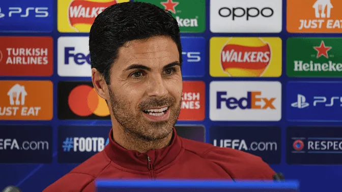
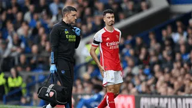
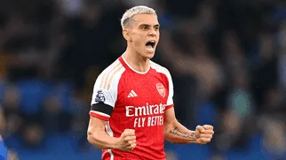

Ultimas Noticias

CONFERENCIA DE PRENSA
Las palabras del Mikel sobre el partido ante PSV
“Ha pasado mucho tiempo para el club desde que participamos en la competición y obviamente también es la primera vez para mí como entrenador. Hemos estado persiguiéndolo y luchando por ello y ahora lo tenemos. Ahora hay que aprovecharlo al máximo y empieza por casa", declaró el técnico español.

NOTICIAS DEL EQUIPO
Martinelli salió lesionado en el encuentro ante Everton, aún se espera el resultado de los exámenes medicos

DIA DE ENTRENAMIENTO
¡Hola Martin! Ødegaard ya se entrena junto al equipo para el encuentro ante PSV por Champions League

ENTREVISTA